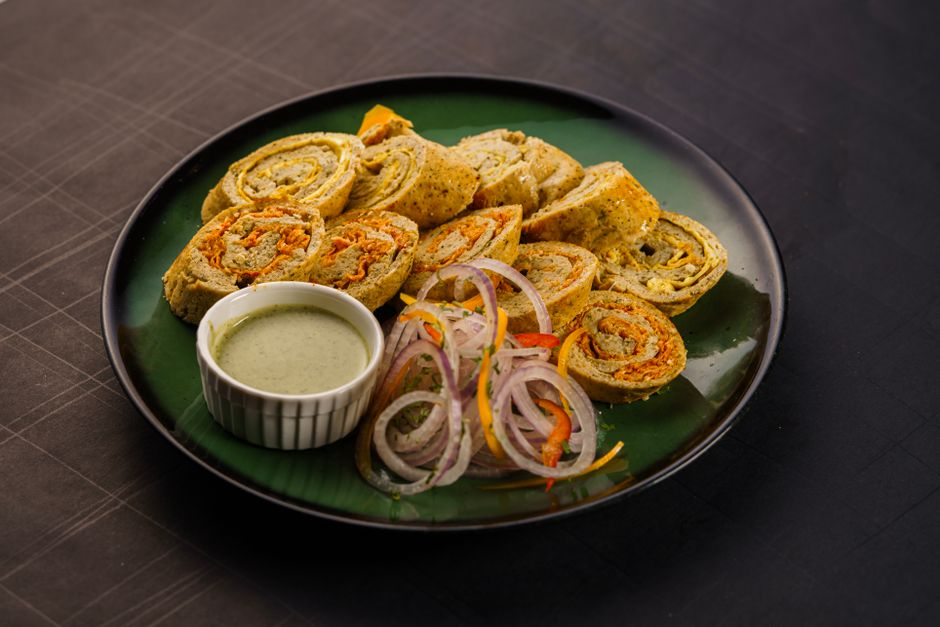

Turkey & Cheese Roll-Up Snack Box

Turkey & Cheese Roll-Up Snack Box delivers 70 g of protein for just 8 g net carbs — no cooking required — just assemble and eat. It keeps net carbs low and added sugar near zero, so your energy stays steady.
Ingredients
- 250 g Smoked deli turkey
- 60 g Sharp cheddar cheese
- 2 Large eggs (hard-boiled)
- 6 Olives
- 100 g Cucumber & cherry tomatoes
Equipment
- saucepan
Method
- Roll slices of turkey around sticks of cheddar.
- Pack with halved hard-boiled eggs, olives and fresh vegetables.
- Assemble as a grab-and-go bento box.
Storage & make-ahead
Best assembled fresh. Prep the components up to 2 days ahead, keep chilled, and combine just before eating.
Tip
The ultimate portable high-protein box — no fridge-to-table cooking, travels well, and lands a full 70 g protein.
Dietary swaps
Dairy-free: Sharp cheddar cheese → dairy-free cheese (for lactose intolerance or a dairy-free diet)
Full nutrition (estimated, per serving): 580 kcal · 70 g protein · 8 g net carbs · 38 g fat (16 g sat) · 2 g fiber · 4.5 g sugar · 3360 mg sodium. Allergens: Milk, Egg. Macros are realistic estimates from standard food-composition values; brands and portions vary.
Read the full cookbook — 100 recipes, 3 meal plans & the science →